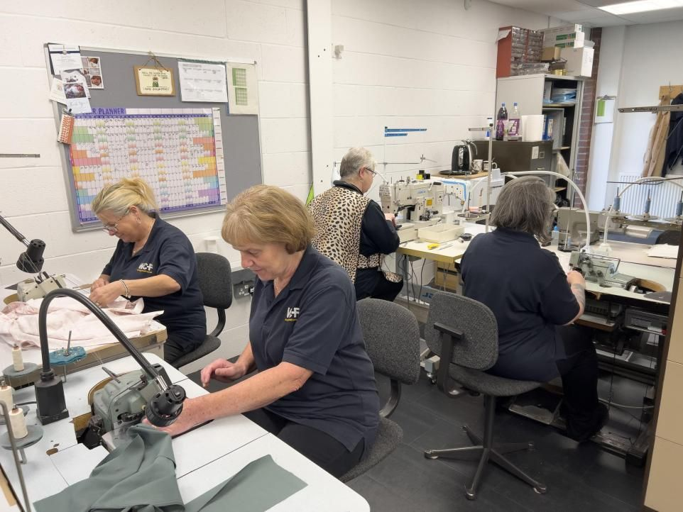
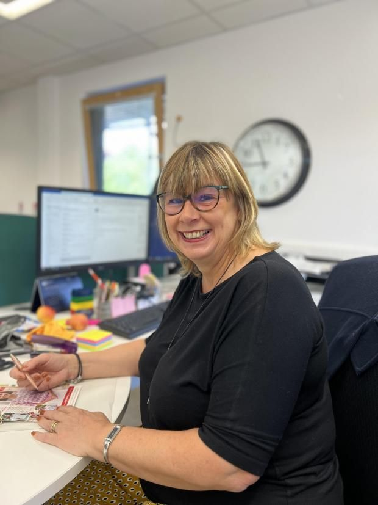

Focus on Home Shopping
In Cumbria ran a feature on WCF Home Shopping, which designs and delivers mail order clothing to customers across the UK from our home in Brampton in their Sept-24 print edition.
The article discussed how every week, a mail order clothing catalogue designed by us in Brampton drops on tens of thousands of doormats across the UK. When a customer places a telephone order, their call is answered by a team member based at this same office, and their goods are picked, packed and shipped from a warehouse at the same site. Even the clothing they receive in their delivery is designed and sampled in Brampton.
WCF Home Shopping is one of the biggest players in its sector in the UK and is probably better known by its nationwide brands: Country Collection, James Meade and The Classic Boutique.
WCF’s head office at Crawhall in Brampton is home to a team of more than 70 employee owners, across clothes design, sample making, buying and merchandising, graphic design, customer service, warehouse fulfilment, marketing, data analysis and segmentation and finance.

The customer demographic is a mature lady, usually aged 75 and over, and every member of the team knows exactly who ‘she’ is and how she likes to dress. From choosing prints, colours and fabrics at the very start of the design process to a simple and free in-house returns service, the business is set up to ensure ‘she’ gets the best product and service.
Debbie Brimicombe is General Manager of WCF Home Shopping and oversees the Brampton-based operation. She shares an open plan office with designer Sandra May surrounded by sample garments and hundreds of tactile fabric swatches.

“The key to our business is understanding our customers and keeping them in mind in everything we do,” she said. “We analyse the data to inform our thought process for every single garment we create - from what it looks like, how and where it is likely to be worn, how it should be cared for, to how it's marketed. The data also supports our customer service team who have access to information at their fingertips about past orders and preferences to help them advise customers about colours, styles and sizes.”
Around 75% of orders are placed over the phone which influences how the team operates.
“While many mail-order clothing firms now focus on online sales, we do things differently due to our customer demographic,” said Debbie. “Printed catalogues remain a key part of our business model. We always see a spike in orders after a catalogue is delivered, both online and via the telephone, and can receive up to 1,000 calls a day at peak times. Our customer service team understands that they could be the only person that customer speaks to all day, so it’s more than a transactional service. We don’t put a time limit on calls.”
WCF Home Shopping’s USP is a wide range of colour options and sizes (8 to 24) as well as an inhouse team of seamstresses who will alter the length of trousers, skirts or even nightwear on the same day as the order is dispatched.
Our best-selling products include easy-to-wear Sandown classic pull-on and zip trousers, available in 15 colours, and a range of classic 21-gauge merino knitwear styles in up to 29 colours.
The team produces 13 catalogues a year for each brand and launches spring/summer and autumn/winter collections every year. This includes the James Meade menswear brand which is marketed through its own catalogue and online.
Eighteen months before a collection is launched, Sandra and head of buying and merchandising Mellissa Reid attend the twice-yearly fabric shows in Paris along with fashion houses from across Europe.
“We’re always enhancing the range with designs which work for an ever-younger minded customer,” said Sandra. “Our customers are looking for smart clothing with a comfort aspect and we adapt trends in our own way, using natural fibres wherever possible.
“We know from the data which items are popular and use our knowledge and experience to introduce new lines or different colour options, details and patterns.”
Around 200 new garments are designed for each collection, with the majority of them made into real-life clothing samples by the sewing team. Items selected for inclusion in the catalogue are manufactured mainly in Europe and delivered to the 17,000 sq ft warehouse in Brampton.
The team at Brampton organises and stages its own photoshoots, with autumn/winter shot on location in the UK, and spring/summer collection in Spain.
The brands are marketed online and offline including a print advertising campaign in national publications, as well as targeted offers to existing and new customers.
Within 24 hours of being placed, an in-stock order is picked and packed so it’s ready for dispatch. The packaging is sustainable and has been specifically designed to make it easy to return if required.
“The whole operation is a huge team effort,” said Debbie. “Each team supports the other, particularly during busy times such as the launch of a new collection. Ultimately, we’re a business which has our customers at its heart.”
Press Links
< Previous Article Minister tours Edinburgh park flying flag for quality tourism